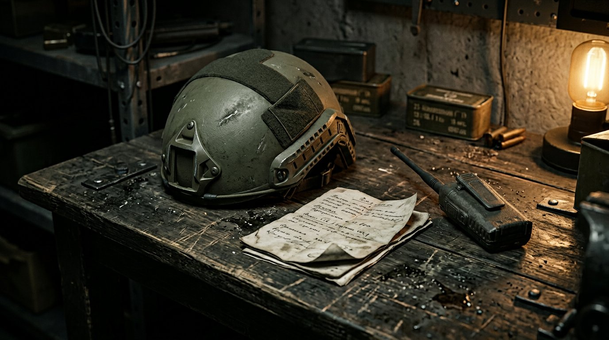
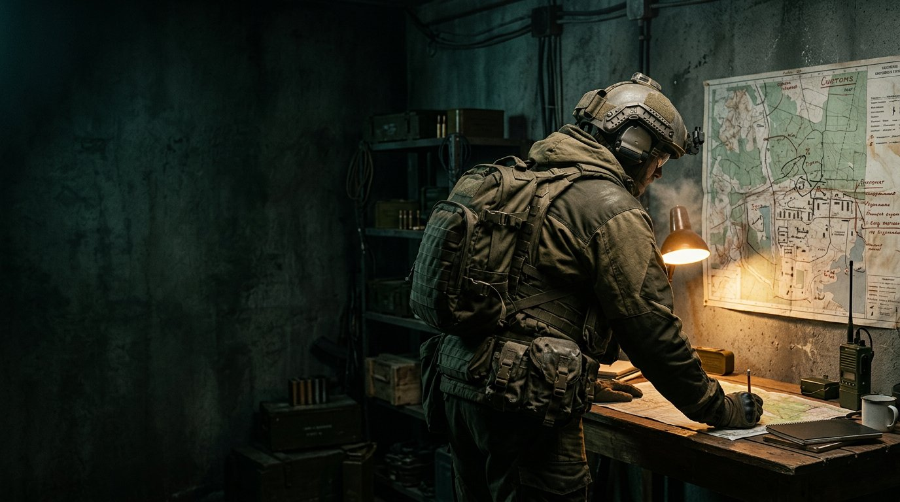
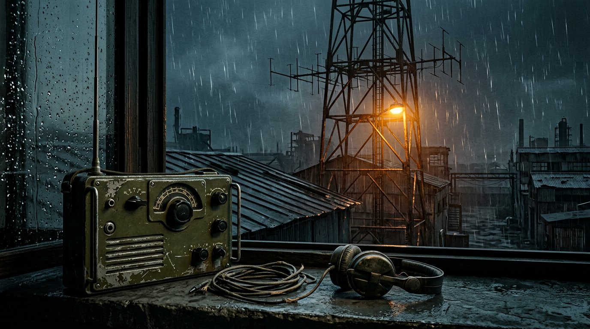

RECHERCHERecherche globale
Essayez « quetes » ou « munitons ». L’index distingue les outils accessibles des dossiers à venir.

POSTE 01 NORVINSK
Phase 01 · Banc d’essai
Testez la recherche, comparez des cartes et écoutez les ambiances du guide avant la publication de l’accueil.
01 Composants
Trois points d’entrée pour tester le socle et vérifier les données.

RECHERCHEEssayez « quetes » ou « munitons ». L’index distingue les outils accessibles des dossiers à venir.
Sélectionnez deux ou trois lieux et lisez les écarts dans un même mode de jeu.
Comparer les lieuxPatch de référence, correctifs de novembre signalés et clôture annoncée de Kord Breach.
Consulter le relevé02 Données du jeu
Les chiffres d’un mode de jeu ne s’appliquent pas aux autres.
Le mode principal d’Escape from Tarkov combine raids, joueurs et IA. Le profil regular est celui retenu pour le comparateur par défaut.
Mode officiel jouable en solo ou en coop, avec progression propre. Le profil pve garde ses valeurs séparées. Les notes 1.3.0.0 signalent des PMC IA plus difficiles et hostiles aux joueurs.
Séparé du profil PvP principal et étiqueté pvp-season dans les exports. BSG a annoncé la fin de Kord Breach pour le ; le Battle Pass concerne aussi PvP et PvE.
Titre officiel distinct, organisé en matchs. Le patch Arena 0.6.2.5 date du 5 novembre ; le comparateur ne mélange pas les valeurs d’Arena et des raids EFT.
La version stable 4.1.6 exige le build EFT 0.16.9.5.40743. Elle ne repose pas sur le live 1.3 ; les exports du comparateur ne lui sont pas applicables.
Six exemples de carte × mode. Une carte peut donc apparaître dans d’autres modes que celui indiqué ici.
Aucune entrée pour cette combinaison. Changez de type ou de mode.
Comparez les valeurs d’un même export de mode. Les cellules mises en évidence diffèrent entre les lieux sélectionnés.
| Indicateur | Customs | Factory |
|---|---|---|
| Durée exportée | 35 min | 20 min |
| Entrées d’extract | 28 | 10 |
| Entrées de transit | 4 | 3 |
Tarkov.dev · instantanés du 18 novembre 2026 UTC. « Entrées » désigne les enregistrements de l’export, pas les sorties ouvertes en raid.
03 Prise en main
Un exemple de tier list justifiée : d’abord la fiabilité des chiffres, ensuite le confort.
Rang S : Identifier le mode et le patch
Une valeur PvE ou solo n’est pas une valeur PvP.
Rang S : Confirmer les conditions d’un extract
Un nombre d’entrées ne dit ni qui peut sortir ni sous quelle condition.
Rang A : Comparer à profil constant
Deux valeurs dans le même mode donnent un écart lisible.
Rang B : Essayer une ambiance
Décoratif uniquement : ne remplace pas l’audio du jeu.
04 Audio
Quatre boucles originales de 60 secondes, trois sons d’interface. Aucun démarrage automatique.

Choisissez une ambiance, puis lancez l’écoute. Le volume est indépendant de celui du jeu.
Prêt · aucune lecture automatique
Sons d’interface · à la demande
05 Sources
Relevé du · heures en UTC.
Lancée le 16 novembre, la campagne se termine le 23 à 15 h UTC selon l’annonce BSG. Les récompenses sont disponibles dans les trois modes EFT.
Les récompenses acquises restent disponibles ; les succès exclusifs de Seasonal sont reportés vers PvP et PvE. Annonce BSG du 11 novembre. Aucun horaire indiqué.
Le journal communautaire répertorie le build 1.3.0.2.48779. Les notes officielles 1.3.0.0 restent la référence éditoriale. Le déploiement Unity 6 / 1.3.5.0 n’est pas confirmé dans les sources consultées.